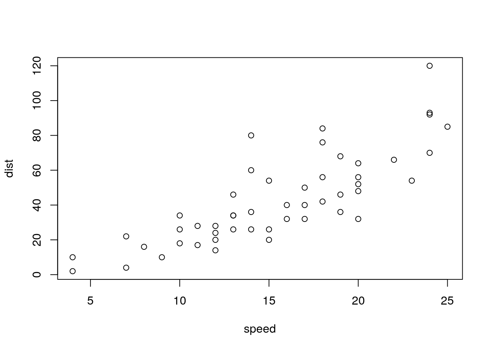

A Bookdown features
Testing stuff!
Nice link
for reference on how to write a thesis with bookdown.
A.1 References
- Important to remember: Label can be: fig:foo, thm:foo
- Appendix won’t have references (figures, tables, equations ain’t gonna be there)
- Examples
- VSM, Compare fixpoint tools
- A link to Pipeline
- Table stuff
- A paper citation: Albert et al. (2008)
- Same paper citation: (Albert et al. 2008)
A.2 Markdown examples
An epigram:
“I thoroughly disapprove of duels. If a man should challenge me, I would take him kindly and forgivingly by the hand and lead him to a quiet place and kill him.”
— Mark Twain
\(f = a\)
\[\begin{equation} f=a \tag{A.1} \end{equation}\]
See Equation (A.1).
Theorem A.1 (Pythagorean theorem) For a right triangle, if \(c\) denotes the length of the hypotenuse
and \(a\) and \(b\) denote the lengths of the other two sides, we have
\[a^2 + b^2 = c^2\]
See Theorem A.1.
Definition A.1 (Pythagorean theorem) For a right triangle, if \(c\) denotes the length of the hypotenuse
and \(a\) and \(b\) denote the lengths of the other two sides, we have
\[a^2 + b^2 = c^2\]
See Definition A.1.
A.3 Figures
A normal paragraph.

Figure A.1: A scatterplot of the data cars using base R graphics.

Figure A.2: A Big Question
See Figure A.2!
A.4 Tables
| mpg | cyl | disp | hp | drat | wt | qsec | vs | |
|---|---|---|---|---|---|---|---|---|
| Mazda RX4 | 21.0 | 6 | 160 | 110 | 3.90 | 2.620 | 16.46 | 0 |
| Mazda RX4 Wag | 21.0 | 6 | 160 | 110 | 3.90 | 2.875 | 17.02 | 0 |
| Datsun 710 | 22.8 | 4 | 108 | 93 | 3.85 | 2.320 | 18.61 | 1 |
| Hornet 4 Drive | 21.4 | 6 | 258 | 110 | 3.08 | 3.215 | 19.44 | 1 |
| Hornet Sportabout | 18.7 | 8 | 360 | 175 | 3.15 | 3.440 | 17.02 | 0 |
See Table A.1
References
Albert, István, Juilee Thakar, Song Li, Ranran Zhang, and Réka Albert. 2008. “Boolean network simulations for life scientists.” Source Code for Biology and Medicine 3: 16. https://doi.org/10.1186/1751-0473-3-16.